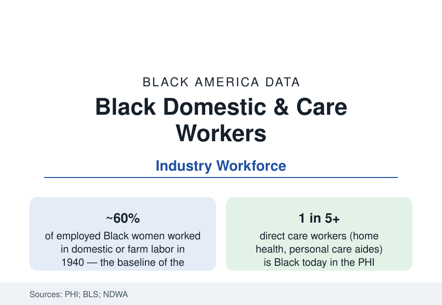

Black Employment
Black Domestic and Care Workers: The Occupation That Raised America
Domestic work was Black women's defining occupation for a century. Today the care workforce — home aides, childcare — remains its heir. The NDWA and BLS data.

In 1940, roughly six in ten employed Black women in America worked in domestic service or on farms — the occupational cage of the Jim Crow labor market. The century since is the story of the cage breaking: the office, classroom, and hospital doors of the earlier profiles opening. Yet the care economy's modern form — the home health aide, the personal care attendant, the nanny and house cleaner — remains disproportionately Black women's work, at the labor market's wage floor, in the economy's fastest-growing occupation. This article reports the domestic and care data.
The Historical Occupation and Its Exclusions
The domestic workforce's data begin with the exclusions that defined it: the New Deal's labor architecture — Social Security (1935), the National Labor Relations Act, the Fair Labor Standards Act — excluded domestic and agricultural workers, the two occupations in which Black workers (and Black women above all) were concentrated, a legislative fact whose consequences compounded for decades (the retirement file's older cohorts carry it). Domestic workers won FLSA coverage only in 1974, overtime and the home-care rule's full application only in the 2010s, and NLRA organizing rights never — the legal skeleton key to the occupation's economics. Within the cage, the workforce built its own institutions: the household workers' unions and associations from the 1930s forward, Dorothy Bolden's National Domestic Workers Union of America (Atlanta, 1968 — organizing thousands of maids into a political force the city's data registered), and the church-and-kin placement networks that set the occupation's informal terms.
The Modern Care Workforce
PHI's workforce data draw the modern occupation at scale: direct care — home health aides, personal care aides, nursing assistants — employs in the range of five million workers and is the fastest-growing major occupation in the BLS projections, with Black workers forming roughly a fifth to a quarter of it and Black women its single largest demographic bloc, alongside immigrant women. The economics are the labor market's floor institutionalized: median wages in the mid-teens per hour in the recent data, benefits thin (the workforce's own Medicaid and SNAP enrollment rates, in PHI's analyses, are the irony the healthcare profile noted — care workers qualifying for public care), turnover at crisis rates in the agency data, and an informal tier (the off-the-books nannies, cleaners, and elder companions — the NDWA's surveys estimate the domestic workforce's informal majority) outside even those numbers' protections. Childcare workers form the adjacent tier — center-based and home-based, heavily Black and Latina, paid below even the care average in the BLS tables.
The Policy Frontier: Bills of Rights and Medicaid's Machinery
The modern reform data are state-shaped: the Domestic Workers' Bill of Rights statutes (beginning with New York in 2010, now in a growing list of states and cities) extending the baseline protections the federal exclusions withheld; the Medicaid program's role as the care economy's true employer (home- and community-based services waivers fund the aide workforce's largest share — the consumer-directed models making the care recipient the formal employer, a structure whose labor data are still maturing); the union footholds (the homecare locals that became some of the largest in the labor movement, organizing through the public-authority models of California, Illinois, and Washington — the union profile's biggest recent membership story); and the immigration intersection (the workforce's large immigrant share making its data a standing variable in that policy file). The pandemic's essential-worker chapter — care workers' exposure, the hazard-pay episodes, the workforce's exit into retail's higher wages — is the file's recent stress test, whose staffing-crisis data (the nursing homes' and agencies' vacancy rates) now drive the wage boards and rate increases of the current state budgets.
The Demand Curve Ahead
The projections guarantee the file's growth: the aging data of the seniors profile convert directly into care demand — the BLS projects home health and personal care as the economy's largest source of new jobs across the decade, hundreds of thousands of openings a year including turnover — staffed, at current patterns, substantially by Black women at wages the labor market will not sustain without the shortages already in the data. The workforce's professionalization file (training standards, credential ladders into nursing, the advanced-aide roles) is the policy literature's proposed bridge between this profile and the healthcare workforce's upper tiers.
Reading the Care Data
Every other profile in this section describes work Black America fought to enter; this one describes the work it was confined to — and that the whole aging nation now depends on. The line from the 1940 kitchen to the 2020s home-care visit is unbroken in the data: same hands, same undervaluation, new legal architecture arriving a clause at a time. The care workforce is the employment section's foundation and its reproach in a single occupation.
More in Black Employment
The Black Unemployment Rate: The Two-to-One Pattern
Black unemployment runs at roughly twice the White rate — 5.5 percent against 3.3 percent in annual averages — a ratio stable across five decades of federal data. How it is measured and why it persists.
Black Median Weekly Earnings: The 80-Cent Ratio
Black full-time workers earn a median of about $900 a week — roughly 80 cents for every dollar White workers earn. The BLS earnings data by group, gender, and occupation.
Black Labor Force Participation: Working at National Rates
Black labor force participation runs at roughly the national rate — and Black women participate at higher rates than White women. The BLS participation data.
Source: National Domestic Workers Alliance research; Bureau of Labor Statistics; PHI (Paraprofessional Healthcare Institute) direct care workforce data; Economic Policy Institute domestic worker analyses.